Real screen captures of the working MetroBalance application: the home page, the Smart Card balance enquiry, the balance-only view, the real-card guidance, FAQ, About, the Swagger API documentation, the in-app presentation, and the mobile layouts — all taken from the running build.
Each capture below is an unmodified screenshot of the running MetroBalance site, taken from the local build. The URL bar shows the exact address a rider or reviewer would open.
Premium hero with the Smart Card number input placed above the fold, one-tap access to the demo card numbers, and the three headline capabilities (balance in INR, recharge history, journey transactions). Every page carries a permanent DEMO DATA ribbon so a simulated balance can never be mistaken for a live one.
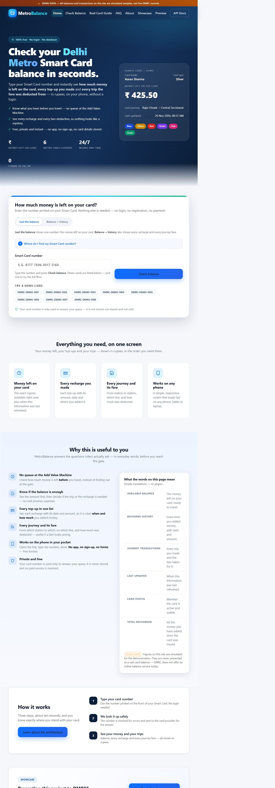
The core screen. After a card number is submitted the page shows the available balance in Indian Rupees, the card holder summary (holder, card type, status, total recharged, issued-on date) and the last balance update timestamp. Below it are the recharge history (amount, channel, date, running balance) and the journey transaction history (date & time, from → to station, line, fare).
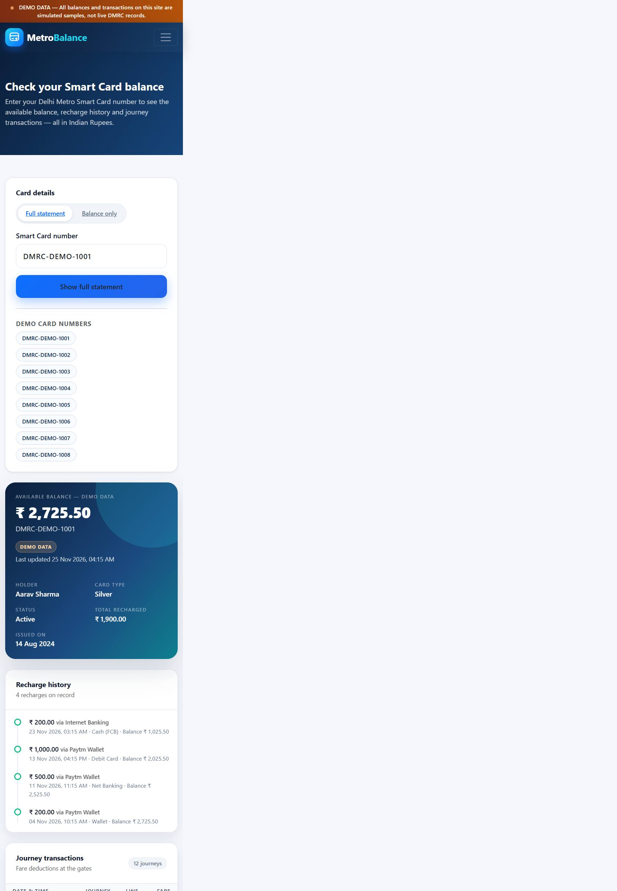
A single-screen view for riders who only want the amount: one large balance figure, the card number and the last-update stamp. This is the lightest possible page to load on a phone at a gate and it is also available as the standalone API endpoint /api/cards/{cardNumber}/amount.
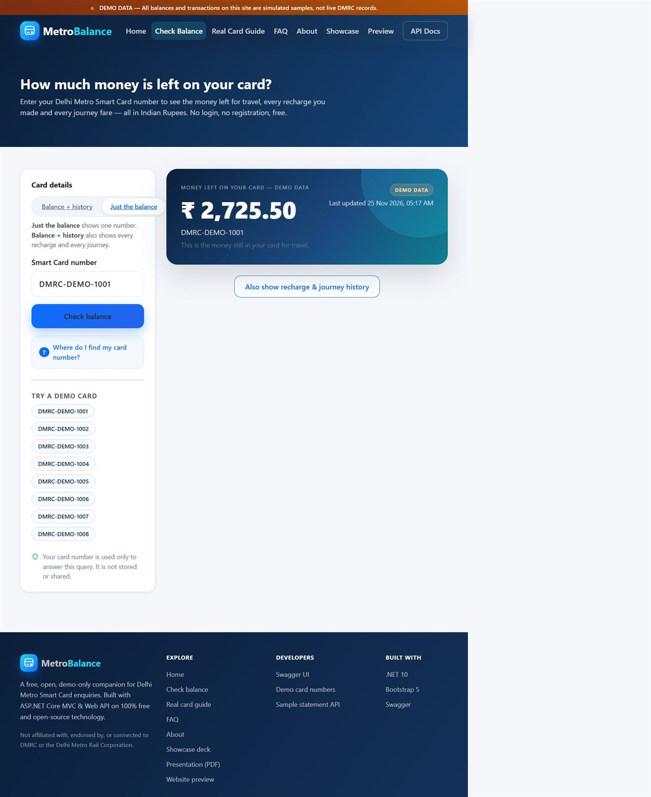
When a rider enters a genuine card number, the application never invents a balance. Because DMRC does not publish an online balance service, the page explains the situation, shows how to read the balance at any station (Add Value Machine inquiry or the Customer Care counter), and links to the official DMRC top-up portal, the DMRC Smart Card portal, the Delhi Metro website, the Sarthi app and the Chetna chatbot.
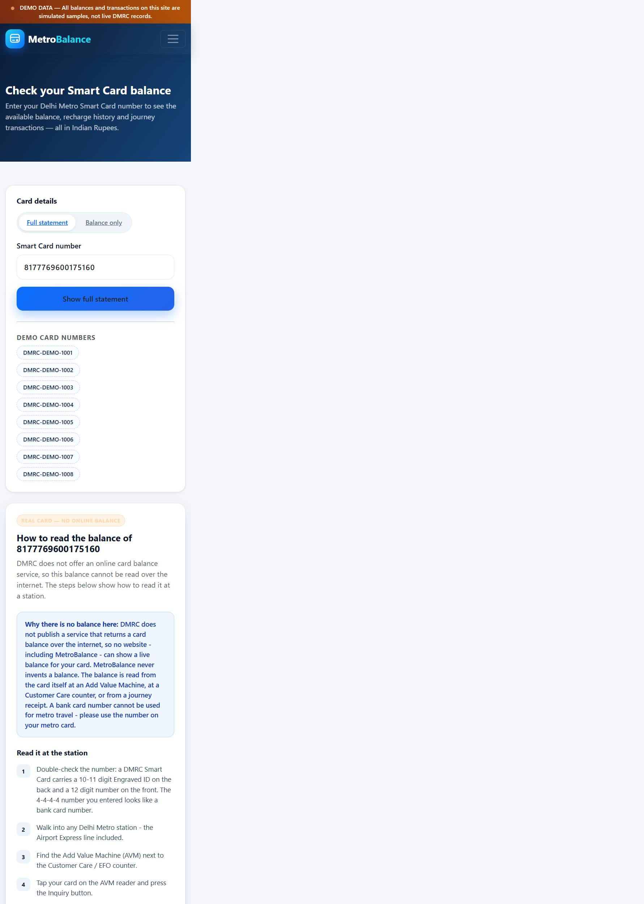
Answers the questions riders and reviewers actually ask: is the balance live, is an account needed, is the data stored, what happens with a wrong card number, and how a future DMRC integration would work.
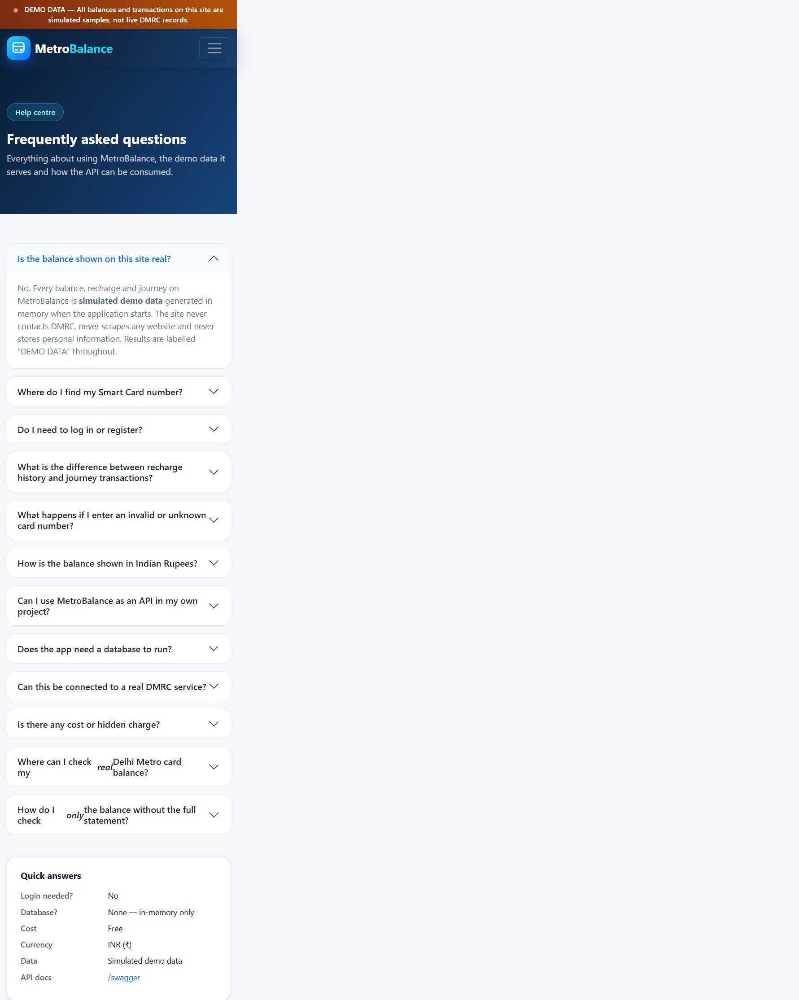
Explains the four project principles (provider abstraction, zero infrastructure, one source of truth, honest by default), shows the solution tree and the IMetroCardProvider seam where an authorised DMRC implementation would be plugged in — no controller, view or service changes required.
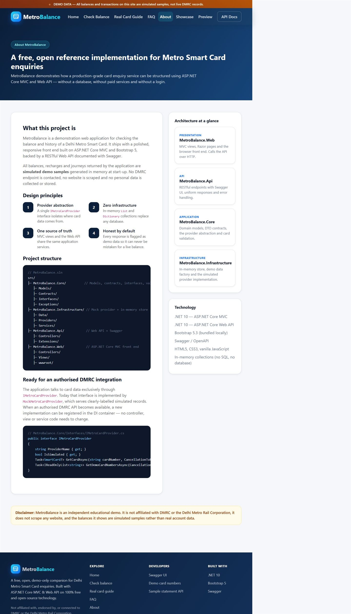
A dedicated page for riders holding a physical card: how to find the Engraved ID, how to top up officially, and where to check the balance offline. This is the page DMRC can publish unchanged as a help article.
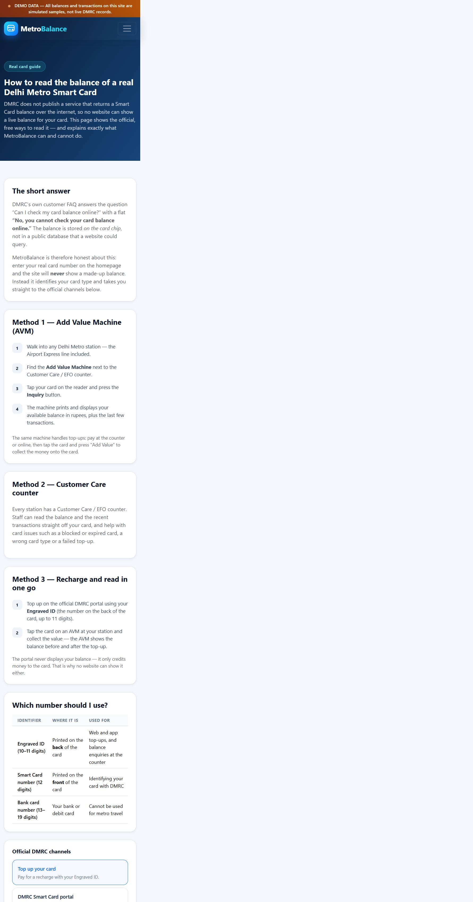
The 13-slide proposal deck is embedded in the running application, so a reviewer can read the whole pitch without leaving the site. Arrow keys navigate, F toggles fullscreen and P exports a PDF.
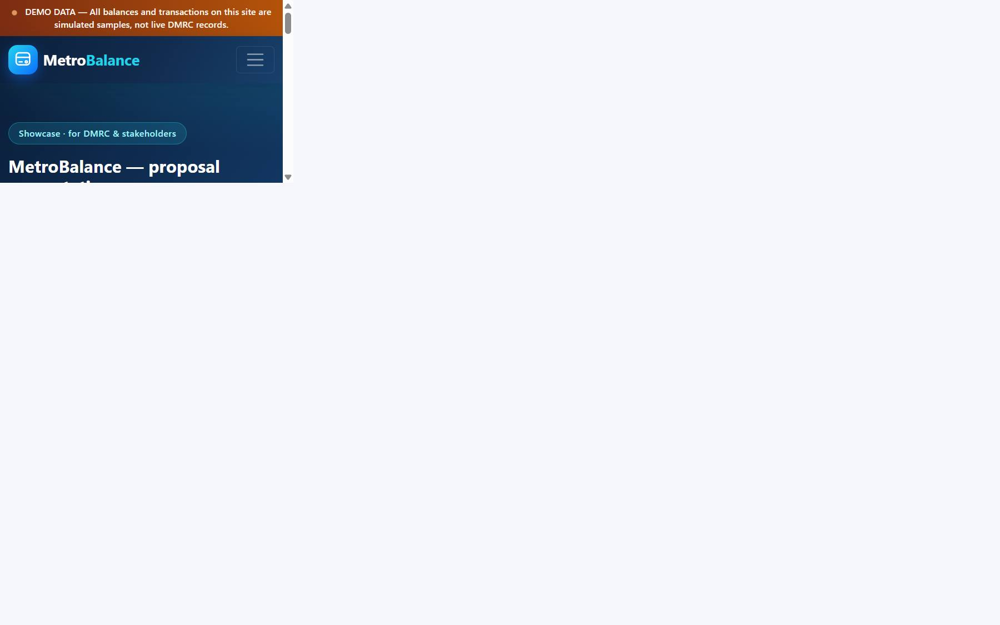
Every requirement of the brief, and exactly where a reviewer can see it working.
| Requirement | Where it is visible | Evidence |
|---|---|---|
| Modern, premium, responsive homepage | / | Screenshot 01 + mobile 10 |
| Smart Card number input | /Card | Screenshot 02 |
| Check card balance | /Card | Screenshot 02 |
| Balance displayed in Indian Rupees | /Card, /Card?mode=amount | Screenshots 02, 03 |
| Recharge history | /Card | Screenshot 02 |
| Journey transaction history | /Card | Screenshot 02 |
| Last balance update | /Card | Screenshot 02, 03 |
| Card validation & error handling | /Card (real-card guidance) | Screenshot 04 |
| FAQ and About pages | /Home/Faq, /Home/About | Screenshots 05, 06 |
| Mobile-friendly interface | All pages at 414 px | Screenshots 10–12 |
| Swagger API documentation | /swagger | Screenshot 09 |
| Presentation for stakeholders | /showcase | Screenshot 08 |
The same build at a 414 px viewport — the width of a typical Indian smartphone. The single-column layout, the collapsible navigation and the large tap targets are identical to the desktop behaviour.
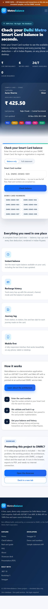
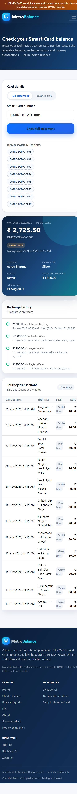
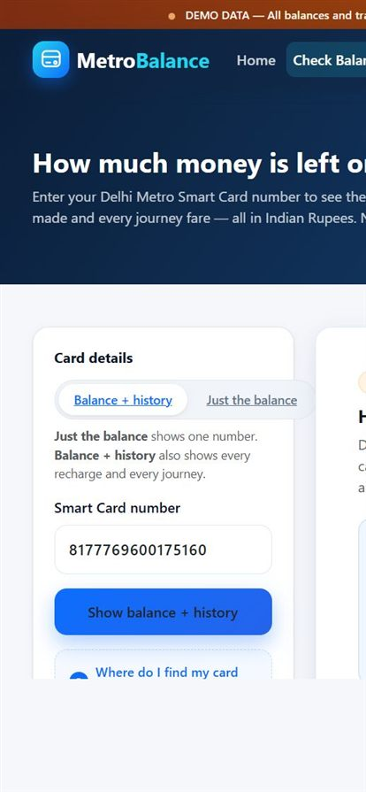
The same data is available as a documented JSON API, so a DMRC portal, a kiosk, a chatbot or a mobile app could consume it directly.
Seven endpoints under /api/cards — balance, amount, statement, enquiry, recharges, transactions and demo-numbers — each with typed request and response schemas and uniform error envelopes. Every response is flagged as simulated demo data in the API description itself.
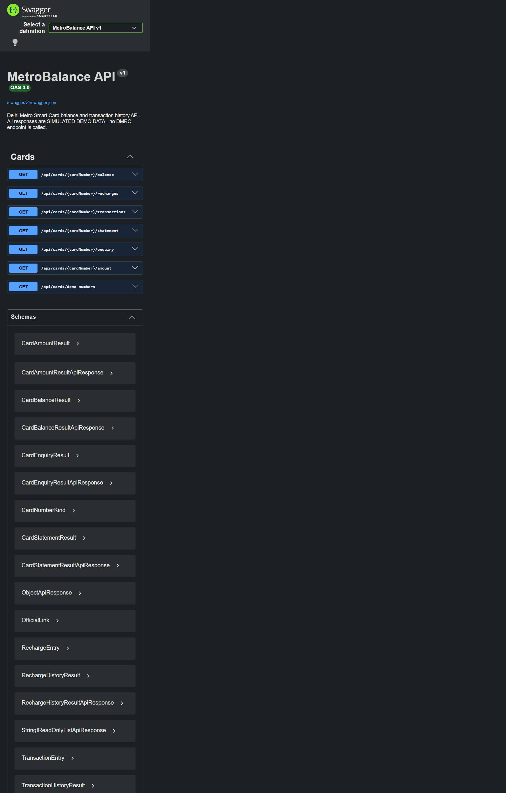
MetroBalance never calls DMRC, never scrapes a website and never invents an endpoint. All values come from an in-memory collection created at start-up.
A permanent ribbon on every page, a “DEMO DATA” tag on every balance card, and an explicit disclaimer in the API description and the footer.
A genuine card number returns an explanation and the official offline channels instead of a fabricated balance.
A new IMetroCardProvider implementation can be registered in the DI container. The UI, the API and the documentation stay untouched.
DmrcMetroCardProvider and the same UI would show live values.